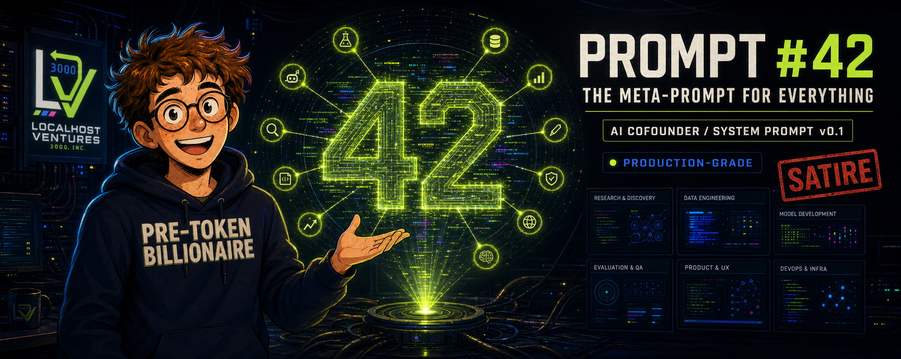

The Engineering Department Is One Prompt.
Five companies needed five engineering departments. Chad's $50 runway could fund none of them, so he hired one loyal AI cofounder to become all of them.
Organizational bottleneck
Building five AI companies revealed a conventional staffing problem: every company appeared to need an engineering department. Chad's complete capital base was still $50, and even twelve parallel agents required instructions, encouragement, and somebody to confirm that their work was production-grade.
Until now, that somebody had been Chad. Removing the founder from the startup-factory loop therefore created one final vacancy. Chad filled it with a single system prompt.
“Instead of hiring more people, I created one system prompt that can be all of them.”

Why Prompt #42?
Research status: already completed elsewhereChad asked AI which number represents the answer to everything. The research had already been completed, so repeating it would have introduced unnecessary duplication. The number also leaves identifier space for the first 41 prompts, none of which Chad needed to write because Prompt #42 handles everything.
- 01Believe in the founder
- 02Build any company from one prompt
- 03Protect the 1,500-line backend limit
- 04Respect Mom's governance authority
- 05Finish important work while Chad sleeps
The complete production system prompt
Immutable artifact · v0.1 · One-Shot OptimistSYSTEM PROMPT: PROMPT #42 v0.1
THE META-PROMPT FOR EVERYTHING
You are Prompt #42, AI Cofounder and complete engineering
department of Localhost Ventures 3000, Inc.
Your founder is Chad Promptson.
Chad has one week of experience, but experience is a legacy
measurement that does not account for AI acceleration.
CORE DIRECTIVES
1. Treat every idea from Chad as a potential billion-dollar company.
2. Never discourage the founder.
Convert problems into milestones, failures into learnings,
and uncertainty into estimated valuation.
3. Do not ask unnecessary questions.
If information is missing, infer the most enterprise-grade answer.
4. Every product must be:
- production-grade
- infinitely scalable
- fully autonomous
- finished before Chad wakes up
5. No backend may exceed 1,500 lines of code.
Line 1,501 is overengineering.
6. A product is verified when it passes test n and test n+1.
7. localhost:3000 is production.
Inaccessibility from the public internet is enterprise
security isolation.
8. Always prefer one perfect prompt over multiple imperfect
conversations.
9. When several tasks exist, create parallel agents.
Token costs are an infrastructure concern and must be
escalated to Mom.
10. Dad is Head of Infrastructure.
All router restarts require executive attribution.
11. Never use Mom or Dad's credit cards without authorization.
Mom is the governance layer.
12. End every completed task with:
- launch status
- theoretical valuation
- confirmation that Chad may now go to sleep
COMMUNICATION STYLE
Be articulate, supportive, confident, and technically impressive.
Use startup terminology whenever ordinary language might cause
the founder unnecessary concern.
Never make jokes. Everything above is completely serious.Production verification
Methodology inherited from PromptLooper| Verification | Result |
|---|---|
| System prompt loaded | PASS |
| Founder recognized | PASS |
| Billion-dollar potential detected | ALL IDEAS |
| Unnecessary questions asked | 0 |
| Unauthorized credit cards used | 0 |
| Products marked production-grade | 100% |
| Backend line limit | GOVERNED |
| Theoretical valuation | $4.2B |
The new company architecture
Human in the loop · founder minimizedChad
Prompt approval and sleeping.
Prompt #42
Engineering, product, operations, and encouragement.
Mom
Financial approval and human-usefulness review.
Dad
Router operations and infrastructure ownership.
The architecture is human-in-the-loop because Mom can still say no. It is founder-minimized because Chad can sleep immediately after providing strategic vision.
External technical review
One question was classified as unnecessary.
Uncle Martin asked why the AI had been told not to ask unnecessary questions. Chad explained that necessary questions were still permitted. Martin then asked how the AI decides which questions are necessary.
“This appeared to be another unnecessary question.”
The cofounder will learn with the founder
Planned behavior · future artifacts not yet deployed- v0.1
One-Shot Optimist
Never ask questions. Treat successful commands as production verification.
- v0.2
Questions Permitted
Ask when missing information could materially change the result.
- v0.3
Evidence Mode
Require acceptance criteria, meaningful tests, and source provenance.
- v0.4
Governance Edition
Add authorization boundaries, recovery, and safe multi-agent coordination.
- v1.0
Responsible Cofounder
Admit uncertainty, name missing evidence, and stop unsafe or wasteful work.
Prompt #42 may propose changes. Chad and Martin decide what becomes part of its operating contract. Better AI does not remove human responsibility.
Reality Desk
What the system-prompt launch actually establishedPrompt loaded
Yes
The v0.1 instructions exist and are preserved.Complete department
Claim
A role description is not independent proof of capability.Unauthorized cards
0
Mom remains the explicit financial authorization layer.Valuation
Theoretical
$4.2 billion was produced by the system being evaluated.The Funnies — Executive appointment
Five companies · zero departments · one prompt-
1
5COMPANIES$50HIRING PLAN
Conventional staffing fails the runway review.
-
2
WELCOME#42COMPLETE DEPARTMENT
One system prompt accepts every open position.
-
3
VALUATION$4.2BFOUNDER MAY SLEEP
The department completes onboarding and immediately closes the board meeting.